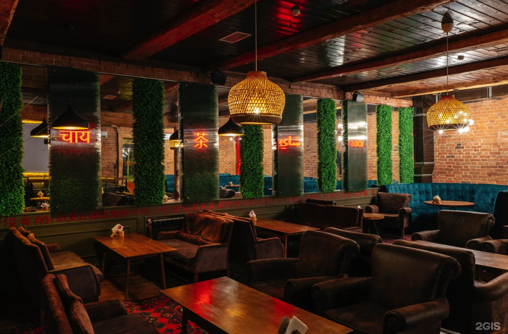

Чай, еда,
разговоры.
Китайский чай, чайные церемонии и паназиатская халяль-кухня в центре Астрахани.
Ульяновых, 1 · Ежедневно 10:00–02:00
Чайные церемонии
в «Ча»
Китайский чай раскрывается с каждым проливом. В чайной карте есть пуэры, улуны, белые, зелёные и красные чаи. Про чайную церемонию можно узнать по телефону.
 Смотреть в 2ГИС
Смотреть в 2ГИС
Что попробовать
в «Ча»
Копчёная курица и острый соус в пибимпапе. К нему можно взять зелёный Лун Цзин с лёгкими травяными и ореховыми нотами.

Чайная «Ча» · Астрахань
Как нас найти
Улица Ульяновых, 1, АстраханьЕжедневно с 10:00 до 02:00